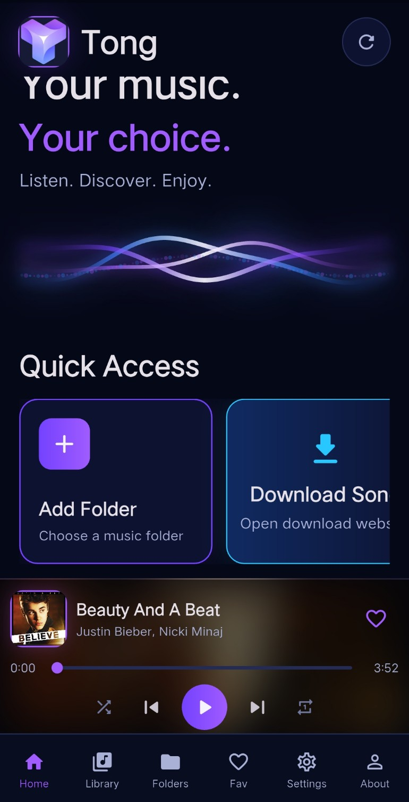

01
Local Music
Select a folder and keep your music organized directly on your device.
A clean, modern and offline music player designed to keep your music in your hands — without unnecessary distractions.

Tong focuses on the things that actually matter when you just want to listen to your music.
Select a folder and keep your music organized directly on your device.
Listen to your music without depending on an internet connection.
Control how your music plays with flexible playback modes.
Play, pause, skip and control your music without unnecessary complexity.
A modern interface designed around your music instead of distractions.
Your files. Your device. Your experience.
Tong was created around one simple idea: your music player should stay out of the way and let your music take the focus.
Select your local music folder and let Tong handle the rest.
Enjoy a straightforward playback experience designed for everyday use.
Your music stays available locally, even when you're offline.
Tong is an independent project created by Tushar Seth with a focus on learning, experimenting and building useful software.
Download Tong for your device and start listening to your local music.
Install Tong directly on your Android device.
Download APK ↓Download the desktop version of Tong for Windows.
Download ZIP ↓